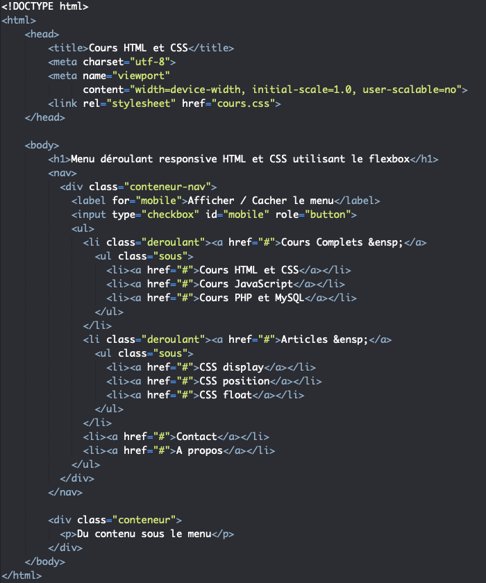
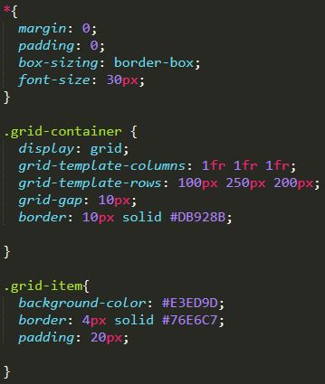

Certification HTML et CSS
Certification HTML et CSS
HTML (HyperText Markup Language) et CSS (Cascading Style Sheets) sont les technologies de base essentielles pour le développement de sites web modernes. HTML fournit la structure des pages web, tandis que CSS est utilisé pour styliser et agencer les éléments afin de rendre les pages visuellement attrayantes et fonctionnelles.
Une formation en HTML et CSS permet de maîtriser ces langages indispensables, offrant ainsi une compréhension complète des concepts clés nécessaires pour créer des sites web responsive, accessibles et performants. Cette formation inclut les bases de la mise en page, des styles, des formats de texte, de l’intégration de médias et bien plus encore.
Les tableaux vous permet de retrouver rapidement et facilement des valeurs au croisement entre différents types de données, par exemple : une personne et son âge. Les tableaux permettent d'être insèrer avec la balise HTML < table > et se définit ligne par ligne avec < tr > . Chaque ligne comporte des cellules < td > (cellules normales) ou < th > (cellules d'en-tête). On peut ajouter une bordure aux cellules du tableau HTML avec la propriété CSS border.
Le CSS Grid vous permet de créer des mises en page complexes en définissant des lignes et des colonnes dans un conteneur. Il est utile pour organiser des éléments de manière plus flexible et structurée. Pour utiliser CSS Grid, il suffit de définir un conteneur avec la propriété display: grid; et de spécifier le nombre de lignes et de colonnes avec les propriétés grid-template-rows et grid-template-columns. Chaque élément enfant du conteneur peut être placé à l'intersection des lignes et des colonnes à l'aide des propriétés grid-row et grid-column. Il est également possible de créer des espaces entre les éléments en utilisant la propriété grid-gap.
